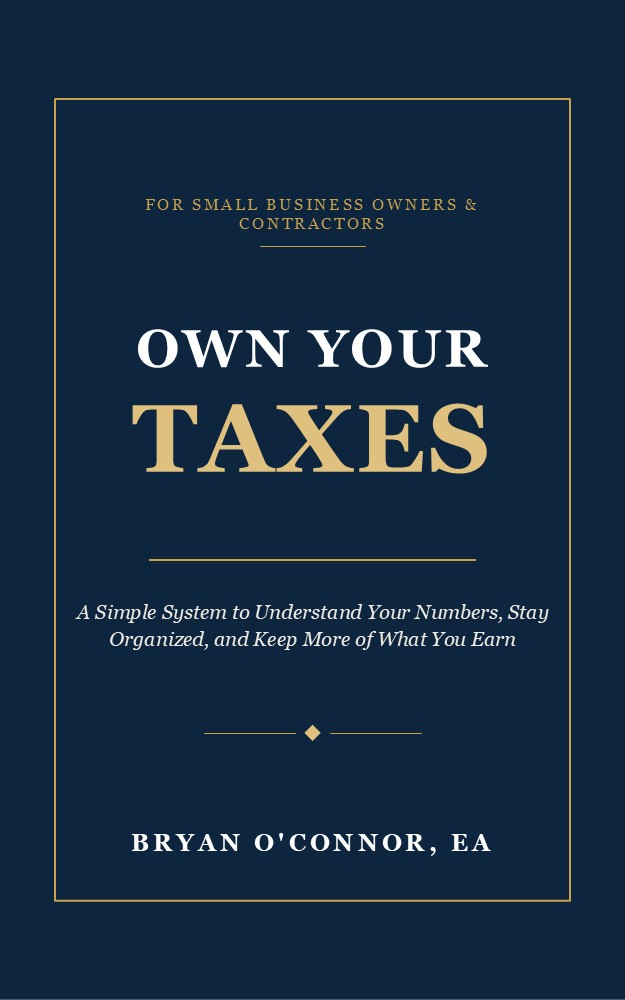

The Musicians Edition is designed for performers, recording artists, songwriters, producers, music teachers, and other creative professionals who earn income through music-related activities.
This guide explains common tax concepts in clear language and focuses on practical strategies for recordkeeping, expense tracking, and staying organized throughout the year.
View on AmazonMany musicians earn income from multiple sources throughout the year, including performances, teaching, recording projects, royalties, and other creative work. Understanding the basics of tax organization can help reduce stress and provide greater confidence during tax season.
The Musicians Edition was created to provide practical tax education tailored to the unique realities of working in the music industry.
← Contractors | Online Sellers →
© 2026 Own Your Taxes. All Rights Reserved.
Disclaimer | Contact | Home